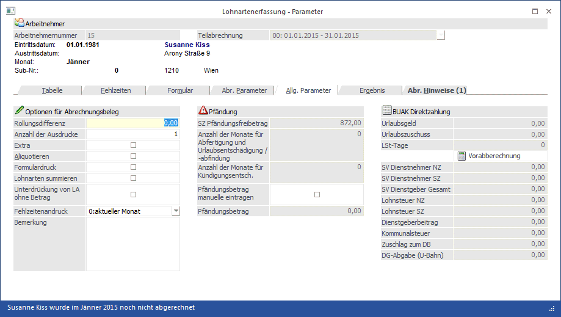

Hier werden die Allgemeinen Parameter angezeigt.

Ø Rollungsdifferenz:
In diesem Feld steht nur dann ein Wert, wenn für den Arbeitnehmer eine Rollung für bereits abgeschlossene Perioden durchgeführt wurde (dies ist nur dann zulässig, wenn nachträgliche Änderungen z. B. rückwirkender Freibetrag oder rückwirkende Änderung des Kollektivvertraglohnes abzurechnen sind). Je nachdem ob der Betrag positiv oder negativ ist, wird der dem Nettobetrag hinzugerechnet oder abgezogen.
Ø Anzahl der Ausdrucke
Hier kann die Anzahl der Ausdrucke der Abrechnungsbelege festgelegt werden. Z.B. bei Eingabe von 2 wird die Abrechnung pro Arbeitnehmer zweimal ausgedruckt.
Hinweis:
Im Formular für den Abrechnungsbeleg gibt es die Möglichkeit, Flags für bis zu 5 Ausdrucke zu hinterlegen. Damit kann z.B. gesteuert werden, dass der erste Ausdruck direkt am Drucker, der zweite Ausdruck als PDF-Datei und der dritte Ausdruck als Mail versendet werden soll.
Ø Extra
Ist diese Option aktiv, dann wird das Abrechnungsfenster in einem eigenen Fenster dargestellt. Ansonsten kann das Abrechnungsergebnis über das Register "Ergebnis" angesehen werden.
Ø Aliquotieren
Aliquotieren bedeutet, dass fixe Bezüge (wie Gehalt) gemäß der in den Parametern eingestellten Tage angepasst werden. Beispiel dafür wäre, dass ein AN während des Monats ein- oder austritt und somit nur 15 Tage im Monat gearbeitet hat. Ein Bezug, der auf Basis von Stunden ausgezahlt wird, darf nicht aliquotiert werden.
Durchführung:
Wenn im Register "Parameter" die SV-Tage verändert werden (grundsätzlich hat jedes Monat 30 SV-Tage), wird automatisch die Option "Aliquotieren" aktiviert. Alle Lohnarten, bei denen die Checkbox "Aliquotieren" aktiviert ist, werden dann nach dem Schema "Neuer Betrag = alter Betrag / 30 * SV-Tage" berechnet, wobei der "alte Betrag" gespeichert wird. Damit kann die Aliquotierung jederzeit rückgängig gemacht werden.
Bei welchen Lohnarten macht das Sinn?
Grundsätzlich sollten nur jene Lohnarten zum Aliquotieren freigegeben werden, die fixe Bezüge wie z.B. Gehalt oder Sachbezug darstellen.
Achtung:
Diese Funktion "Aliquotieren" kann nicht für die Berechnung von aliquoten Sonderzahlungen verwendet werden.
Ø Formulardruck
Durch Aktivieren der Checkbox wird die Abrechnung für diesen Arbeitnehmer auf ein Formular gedruckt.
Ø Lohnarten summieren
Wenn die Checkbox aktiviert wird, werden gleiche Lohnarten (z.B. Grundlohn für Arbeiter wird für verschiedene Kostenstellen mehrfach erfasst) auf eine zusammengezogen. Voraussetzung dafür ist, dass gleiche Lohnartennummern z.B. 1 verwendet werden.
Hinweis:
Wenn diese Option aktiviert ist, dann wird der Satz beim Ausdruck des Abrechnungsbeleges aus Gesamt durch Anzahl Stunden errechnet. D.h. es kann ggf. zu einer Differenz gegenüber der Erfassungszeile geben. Diese Berechnung ist dann notwendig, wenn innerhalb von gleichen Lohnarten unterschiedliche Sätze verwendet werden.
Beispiel:
In der Erfassungszeile werden folgende Werte hinterlegt:
Stunden = 1,5
Satz = 9,1298
Betrag = 13,69 (gerundet auf 2 Nachkommastellen).
Ausdruck am Abrechnungsbeleg mit der Option "Lohnarten Summieren" (sofern auch 4 Nachkommastellen am Abrechnungsbeleg angedruckt werden):
Stunden = 1,5 (wie in Erfassungszeile)
Satz = 9,1267 (Division aus 13,69 durch 1,5)
Betrag = 13,69
Achtung:
Wenn die Option "Lohnarten summieren" eingestellt ist, dann werden eventl. vorhandene Kosteninformationen im Ausdruck nicht angedruckt (weil bei unterschiedlichen Erfassungszeilen unterschiedliche Kosteninformationen enthalten sein können)!
Ø Unterdrückung von LA ohne Betrag
Grundsätzlich werden alle Erfassungszeilen, bei denen einer der Werte STUNDEN, SATZ oder BETRAG ungleich NULL ist, auf der Abrechnung angedruckt. Wird die Checkbox "Unterdrückung von Lohnarten ohne Betrag" aktiviert, werden nur jene Erfassungszeilen auf der Abrechnung angedruckt, bei denen der Wert GESAMT ungleich NULL ist.
Ø Fehlzeitenandruck
Aus der Auswahllistbox kann gewählt werden, welche Fehlzeiten auf der aktuellen Abrechnung angedruckt werden sollen, wobei die Einstellung von den allgemeinen Parametern übernommen wird.. Dabei gibt es folgende Optionen:
ü aktueller Monat
Mit dieser
Option werden nur die Fehlzeiten angedruckt, die für das aktuelle
Abrechnungsmonat erfasst wurden. Diese Option macht nur dann Sinn, wenn die
Abrechnung am Ende eines Monats (wenn schon alle Fehlzeiten erfasst wurden)
durchgeführt wird. Diese Option ist auch die Standardeinstellung.
ü aktueller Monat und
Vormonat
Mit dieser Option werden die Fehlzeiten des aktuellen Monats und des
Vormonats angedruckt. Bei dieser Option kann es vorkommen, dass dann Fehlzeiten
auf 2 unterschiedlichen Abrechnungen vorhanden sind (wenn z.B. eine Fehlzeit für
März noch vor der März-Abrechnung erfasst wurde).
ü Vormonat
Mit dieser Option
werden die Fehlzeiten des Vormonats (Abrechnungsperiode - 1) ausgegeben. Diese
Option ist dann sinnvoll, wenn die Abrechnung im Vorhinein (am Anfang des
Monats) gemacht wird und somit noch nicht alle Fehlzeiten des Monats bekannt
sind.
Ø Bemerkung
Eingabe einer Anmerkung, die auch bei der Abrechnung angedruckt werden kann.
Pfändung
Die nachfolgenden Felder können nur dann bearbeitet werden, wenn das Pfändungsmodul im Einsatz ist, beim AN ein Pfändungsbetrag hinterlegt ist und wenn auch noch entsprechende Sonderzahlungen abgerechnet werden (Einstellung der Lohnart).
Hinweis:
Diese Felder können nicht bearbeitet werden, wenn die Pfändungen über das Pfändungsmodul II abgerechnet werden!
Ø SZ Pfändungsfreibetrag
Wenn eine Sonderzahlung abgerechnet wird, wird hier - abhängig von der Einstellung im AN-Stamm - der zusätzliche Pfändungsfreibetrag (der für Sonderzahlungen extra berücksichtigt werden muss) ausgewiesen und kann ggf. manuell verändert werden. Dieser Wert kann nur dann verändert werden, wenn in der Abrechnung eine Lohnart verwendet wird, bei der das Kennzeichen "13./14. Bezug" aktiviert ist und beim AN auch eine Pfändung hinterlegt ist.
Die nächsten beiden Eingabefelder sind nur dann aktiv, wenn beim AN ein Pfändungsbetrag hinterlegt ist, ein Austrittsdatum eingetragen ist und auch in der Abrechnung Lohnarten verwendet werden, die die Pfändungskennzeichnung für Abfertigung, Urlaubsentschädigung /-abfindung oder Kündigungsentschädigung gesetzt haben:
Ø Anzahl der Monate für Abfertigung und Urlaubsentschädigung /-abfindung:
Hier kann die Anzahl der Monate eingegeben werden, für die eine Abfertigung bzw. eine Urlaubsentschädigung /-abfindung ausgezahlt wird. Dabei richtet sich die Anzahl der Monate bei der (gesetzlichen) Abfertigung nach der Anzahl der ausgezahlten Monate (z.B. bei einer Dienstzeit von 5 Jahren wird hier 3 eingetragen). Bei einer Urlaubsentschädigung /-abfindung richtet sich die Anzahl der Monate nach der Anzahl der zusätzlichen SV-Tage, wobei immer auf ganze Monate aufgerundet werden muss, da für einmalige Leistungen bei Beendigung des Arbeitsverhältnisses stets der monatliche Pfändungsschutz maßgeblich ist (z.B. bei 10 Tagen wird 1 Monate eingetragen, bei 32 Tagen müssen 2 Monate eingetragen werden).
Ø Anzahl der Monate für Kündigungsentschädigung:
Hier kann die Anzahl der Monate eingegeben werden, für die eine Kündigungsentschädigung ausgezahlt wird. Dabei richtet sich die Anzahl der Monate nach der Anzahl der zusätzlichen SV-Tage, wobei immer auf ganze Monate aufgerundet werden muss, da für einmalige Leistungen bei Beendigung des Arbeitsverhältnisses stets der monatliche Pfändungsschutz maßgeblich ist (z.B. bei 10 Tagen wird 1 Monate eingetragen, bei 32 Tagen müssen 2 Monate eingetragen werden).
Ø Pfändungsbetrag manuell eintragen:
Wir die Checkbox aktiviert, dann kann im nachfolgendem Feld der Pfändungsbetrag verändert werden. Dieser Betrag wird dann unabhängig von den automatisch berechneten Pfändungs-Werten genommen und vom Netto abgezogen.
Durch Drücken der F5-Taste werden alle Änderungen gespeichert und es kann der nächste AN erfasst werden. Durch Anklicken des Netto-Buttons wird die Abrechnung des Arbeitnehmers gestartet. Durch Anklicken des "Neu Einlesen"-Buttons werden die Abrechnungsparameter gemäß den aktuellen Einstellungen im AN-Stamm nochmals übernommen. Davon betroffen sind die Felder
ü SV-Tage
ü SV-Tage inkl. Verlängerungstage
ü LSt-Tage
ü Lst-Tage bei Ersatzleistungen
ü BV-Tage
ü SZ Pfändungsfreibetrag
Alle restlichen Felder müssen bei Bedarf manuell geändert werden.
Achtung:
Die geänderten Parameter werden bis zum Abschluss der Datei (Monatsabschluss) gespeichert. Wurden die Parameter hier verändert, werden sie auch bei einer eventl. Stapelabrechnung berücksichtigt.